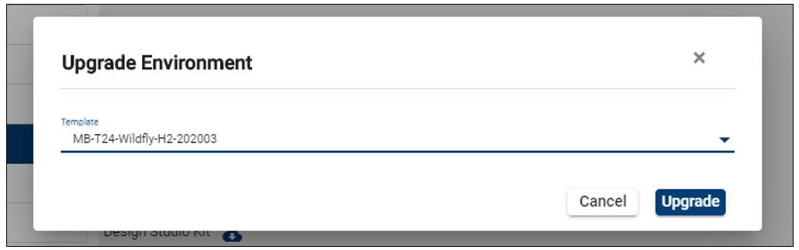
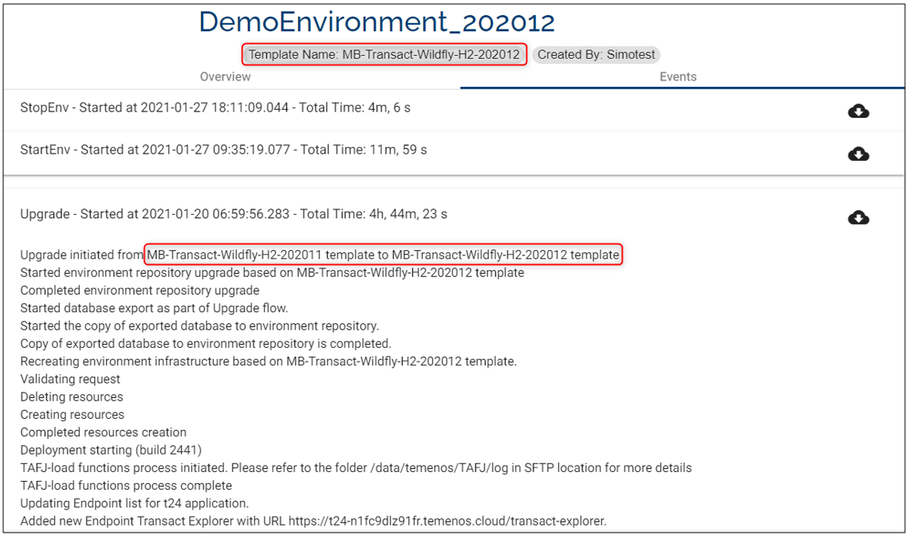

Note
Starting April 5th the TCD user guide will move to the Temenos Customer Support Portal (TCSP). We recommend you to log in to TCSP and check if your credentials are available. Raise a ticket at CloudPlatformSupport@temenos.com if you encounter any issues.
Upgrade Trials
The Upgrade feature enables you to boost your environment to higher T24 releases and run your regression. By undergoing an upgrade you can get better clarity on any issues with the upgrade and in general more confidence and predictability on the upgrade project itself.
Note
During the upgrade only the mandatory components are deployed (browser-classic, t24-ud, t24-jars, tafj-installer, modelbank-database-h2). You can deploy non-mandatory components using this user guide post-upgrade, i.e., after exceptions are authorized and the DB is validated post the technical upgrade.
Upgrade pre-requisites
To upgrade an environment you need:
The UPGRADE_TEMPLATE user permission enabled.
An environment with the status STARTED.
TortoiseGit installed and configured on your local machine.
ModelBank Templates with the release you intend to upgrade assigned to your organization.
How to upgrade an environment
Upon clicking on the button a pop-up appears which prompts to select another template from the list of available template:

Click on Upgrade to proceed.
The environment status changes to Upgrading:
In the Events tab you can see the log which refers to the upgrade from the Base template to Target template.
Once the action is complete, in the Template Info bar you can see that the template name changed to the target release (in this example 202003).

Upgrade Validations
The Upgrade button is enabled at the organisation level.
Once the Upgrade is initiated all the environment action buttons are disabled except Edit Environment and Delete Environment buttons.
Only users with the permission UPGRADE_TEMPLATE will have the Upgrade button enabled on their environment.
The Upgrade button is not available on a stopped environment.
Make sure you have a Database Backup before the upgrade.
L3 or other plugins present in the current template are not auto deployed, and you have to upload them back to GIT and deploy it post upgrade.
The upgrade pipeline will not deploy anything on the GIT folder to the upgraded environment automatically, therefore you have to manually trigger this post upgrade.
The new app server won’t have any additional queues.
The upgrade flow is from the client template to ModelBank template and not vice-versa.
An environment created with a custom template can be upgraded to a ModelBank template and not vice versa.
When an environment is upgraded, the Clone and Rebuild options are not available.
The Upgrade functionality is not available for environments resulted from factory runs (automated and manual factories).
An environment can only be upgraded with a MB template that is assigned to your organisation. You won't be able to upgrade a MB-T24-Wildfly-H2-202002 to a MB-T24-Wildfly-H2-202004 if the latter version is not assigned to your organisation.
Post Upgrade Actions
Install EB products.
Install Transact/ T24 Updates.
Integrate L3 deployment via GIT.
Install new modules in Jboss.
Add new queues and data sources in the standalone.xml file.
Install custom APIs and different versions of core war files.
Deploy helptext files.
Save as New Template (learn here how to create new templates).
Tutorial
Tutorial available here.
User Permissions Required
To be able to perform basic environment operations the below permissions need to be enabled for your user:
- MANAGE _ ENVIRONMENTS
- CREATE _ ENVIRONMENT
- UPDATE _ ENVIRONMENT
- DELETE _ ENVIRONMENT
- BOOST _ ENVIRONMENT
- REDEPLOY _ ENVIRONMENT
- START _ ENVIRONMENT
- STOP _ ENVIRONMENT
- ALLOW - EXPORT - ENVIRONMENT
- START - ALL - ENVIRONMENT
- STOP - ALL - ENVIRONMENT
- SCHEDULE _ ENVIRONMENT
- ALLOW - EXPORT - ENVIRONMENT
- MANAGE _ ENVIRONMENTS
- UPGRADE_TEMPLATE
To have a better understanding of the user permissions, hover the cursor over the variables and a short description will pop up or click here to read more.